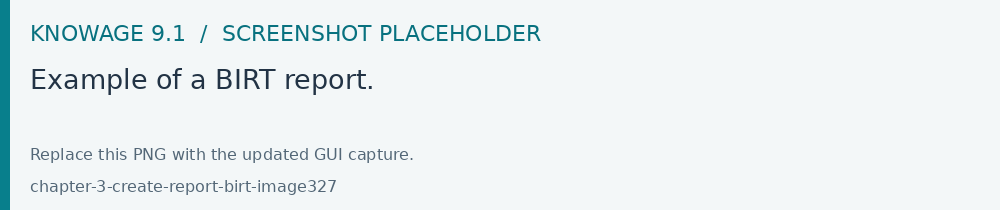
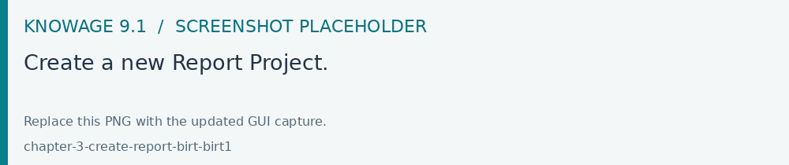
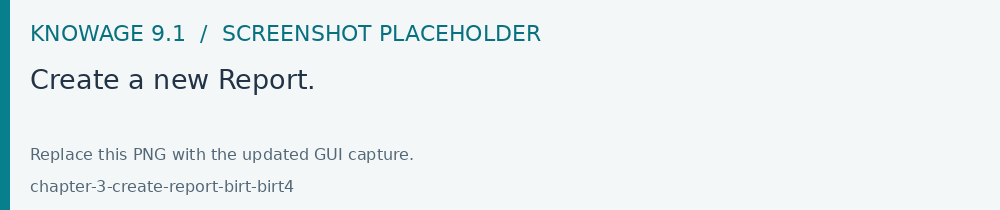
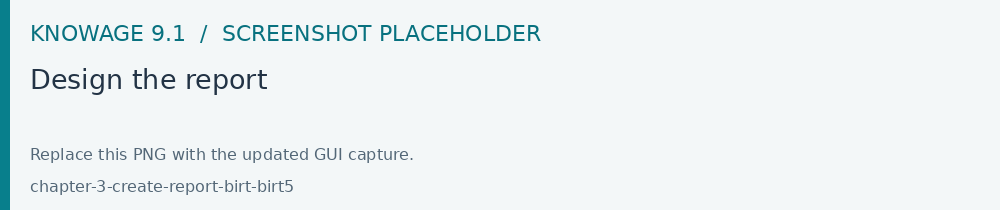
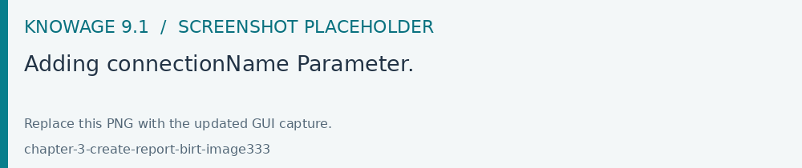
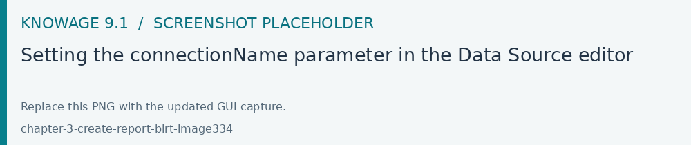
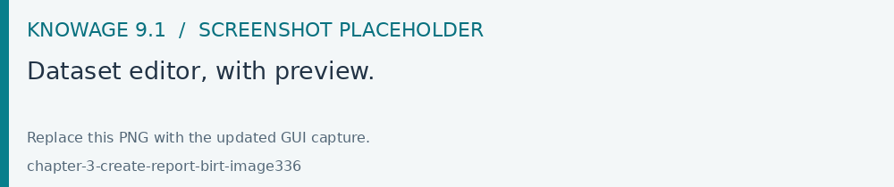
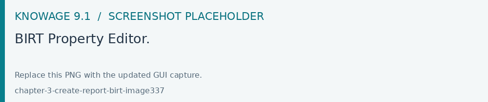
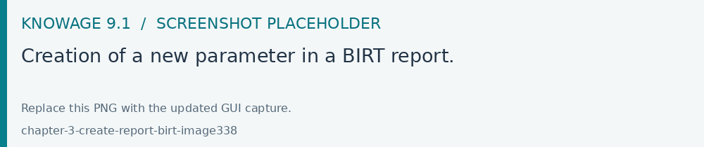
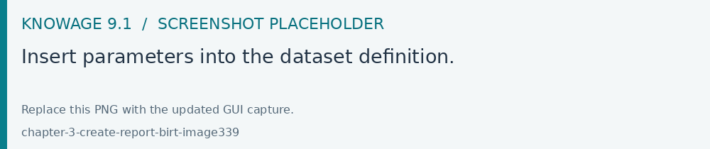

Create a Birt report
Build the BIRT template with the compatible report designer, then publish it to a document using the BIRT engine. Test parameter mappings and each required output format with an end-user role before releasing the document.
Reports represent the most popular type of business analysis. Indeed, they allow the visualization of data in a structured way and accordingly to predefined formats. The main characteristics of a report are:
combination of numerical data (tables, lists, cross tables), charts and images;
static and pixel-perfect layout;
multi-page and multi-format output (PDF, HTML, DOC, etc.);
organization of data by groups and sections;
universal usage (summary, detail, analytical or operational);
being suitable for off-line production and distribution (scheduled execution);
ease of use.
For these reasons reports usually have a pervasive level of usage: they are used by developers to perform both synthetic and detailed analysis, having a particularly low level of difficulty.
BIRT, acronim for Business Intelligence and Reporting Tools, is an open source technology platform used to create data visualizations and reports. In Figure below you can see an example of BIRT report.

Fig. 393 Example of a BIRT report.
Developing a BIRT report
Firt of all you have to download the Birt report designer from here Download Eclipse.
Here you can find some information about how install and use Birt report designer: How install and use birt
After that you can use the designer to create a new report.
create a new Report Project

Fig. 394 Create a new Report Project.
create a new Report

Fig. 395 Create a new Report.
Configure che data source, create the data set and design the report

Fig. 396 Design the report
Using the preview function (under the Run menu) you can test the report.
Once the document is designed, it is stored as a local file, marked out with an icon and a specific file extension:
.rptdesign: document template for reports that use the BIRT engine.
4) Deploy on KNOWAGE server: using the KNOWAGE document browser you can install the report in the Server and test it.
In this specific example, we will show how to create a report with an internal dataset. First of all, in case of an internal dataset, define a JDBC Data Source.
Right click on the Data Source item and select the corresponding data source. A pop up editor will open, prompting you the connection settings:
Driver class
Database URL
Username and password
Note that these configuration parameters will be used by the birt designer to connect to the database and let the report to be executed locally. Make sure that the database set in the Knowage server share the same schema of that defined in the designer.
Since you are setting a local reference to a database inside the report, you need to add an additional information to enable Knowage Server to correctly execute the report by connecting to the data source referenced within the server and not inside the report. Basically, you need to tell the server to override the data source configuration of the report. Therefore, add a parameter to the report, called connectionName, by right-clicking on the “Report Parameters” menu item and selecting “New Parameter”. Fill in the form as suggested below.

Fig. 397 Adding connectionName Parameter.
Then go to Property Binding in the Data Source editor and set the property JNDI URL to the value of the connectionName parameter, as shown below.

Fig. 398 Setting the connectionName parameter in the Data Source editor
Warning
JNDI URL
Do not forget to define the connectionName parameter in your BIRT report and set the JNDI URL accordingly. Without these settings your BIRT report may be unable to access data once it is deployed on the server. In addition, if database and connection properties change, you need to change the connection properties only in Knowage server.
Once the data source has been configured, you can proceed with the creation of a dataset. Therefore, right-click on the Data Set item and select New Data Set. In the next window, select the data source, the type of query and give a name to the dataset, as exhibited below. The scope of this name is limited to your report, because we are defining an internal dataset.
Fig. 399 Dataset definition.
Now you can define your dataset by writing the SQL query in the editor and testing the results (see figure below). At any time, you can modify the dataset by clicking on it, which will re-open the query editor.
Let us design a very simple report, which contains a table showing the data from the defined dataset. The easiest way to create a table from a dataset is to drag & drop the dataset from the tree menu into the editor area.
The most generic way, which applies to all graphical elements, consists in switching to the Palette menu on the left panel, keeping the designer in the central panel. Drag and drop the table into the editor area. Consider that this can be done with all other elements listed in the Palette. At this point, you can edit the table (as well as any other graphical element on the report) using the Property Editor tab below the editor area.
While developing a report, it is particularly useful to test it regularly. To this end, click on the Run menu on top of the screen and select Run as HTML. To revert back to the editor, just click on the Layout tab. In the Master Page tab, you can set the dimensions and layout of the report; the Script tab supports advanced scripting functionalities; finally, the XML Source tab shows the editable source code of your report.

Fig. 400 Dataset editor, with preview.

Fig. 401 BIRT Property Editor.
Once your report is done, you can deploy it on Knowage Server.
Note
Deploy on Knowage Server
To deploy the report you have to create a new Generic document and then upload the template file directly in the document detail page.
The BIRT report designer allows the creation of complex reports, with different graphical elements such as cross tabs, charts, images and different text areas. In this section we do not provide any details on graphical development but we focus on specific aspects of Knowage BIRT Report Engine.
Note
BIRT Designer
For a detailed explanation of report design, please refer to BIRT documentation at https://www.eclipse.org/birt/.
Adding parameters to reports
Most times reports show data analysis that depend on variable parameters, such as time, place, type. Birt designer allows to add parameters to a report and link them to analytical drivers defined in Knowage Server.
To use these parameters, you first need to add them to your report. Right-click on Report Parameters in the tree panel and select New Parameter. Here you can set the data type and choose a name for your parameter.
Warning
Parameters URL
Be careful when assigning a name to a parameter inside a report. This name must correspond to the parameters URL when you deploy the document on Knowage Server.
Once you have defined all parameters, open the (or create a new) dataset. Parameters are identified by a question mark ? . For each ? that you insert in your query, you must set the corresponding link in the Parameters tab: this will allow parameters substitution at report execution time.

Fig. 402 Creation of a new parameter in a BIRT report.
Note that you must set a link for each question mark as shown below, even if the same parameter occurs multiple times in the same query.

Fig. 403 Insert parameters into the dataset definition.
Warning
Transfer reports from Birt designer to Server and vice versa
Any valid BIRT template can be directly uploaded in Knowage Server using the web interface for document management.
Parameters can also be used within some graphical elements, such as dynamic text, with the following syntax:
1 params[name_of_parameter].value